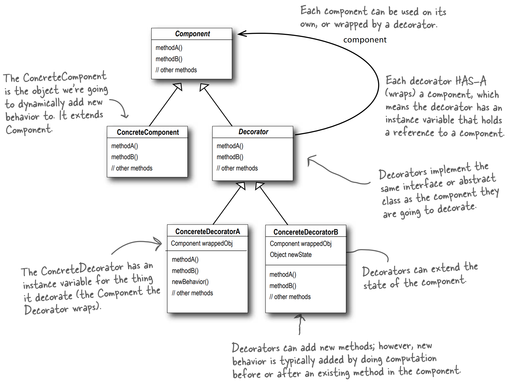
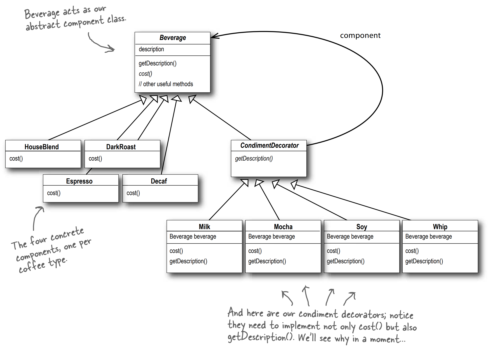

Definition
The Decorator Pattern attaches additional responsibilities to an object dynamically. Decorators provide a flexible alternative to subclassing for extending functionality.

Implementation of Decorator class
public abstract class Beverage {
String description = "Unknown Beverage";
public String getDescription() {
return description;
}
public abstract double cost();
}
// Decorator class
public abstract class CondimentDecorator extends Beverage {
public abstract String getDescription();
}
Implementation of Concrete Beverage
public class Expresso extends Beverage {
public Espresso() {
description = "Espresso";
}
public double cost() {
return 1.99;
}
}
public class HouseBlend extends Beverage {
public HouseBlend() {
description = "House Blend Coffee";
}
public double cost() {
return 0.89;
}
}
Implementation of Condiment instance
public class Mocha extends CondimentDecorator {
Beverage beverage;
public Mocha (Beverage beverage) {
this.beverage = beverage;
}
public String getDescription() {
return beverage.getDescription() + ", Mocha";
}
public double cost() {
return 0.20 + beverage.cost();
}
}
Putting it together
public class StarbuzzCoffee {
public static void main (String[] args) {
Beverage espresso = new Espresso();
System.out.println(beverage.getDescription() + " $" + beverage.cost());
Beverage darkRoast = new DarkRoast();
darkRoast = new Mocha(darkRoast); // wrap it with a mocha
darkRoast = new Mocha(darkRoast); // wrap it with a second mocha
System.out.println(darkRoast.getDescription() + " $" + darkRoast.cost());
Beverage houseBlend = new HouseBlend();
houseBlend = new Mocha(houseBlend);
System.out.println(houseBlend.getDescription() + " $" + houseBlend.cost());
}
}
Starbuzz UML Diagram

Other notes
- Decorators have the same supertype as the objects they decorate
- You can use one or more decorators to wrap an object.
- Given that the decorator has the same supertype as the object it decorates, we can pass around a decorated object in place of the original (wrapped) object.
- The decorate adds its own behaviour either before and/or after delegating to the object it decorates to do the rest of the job.
- Objects can be decorated at any time, so we can decorate objects dynamically at runtime with as many decorators as we like.
- Decorator are typically created by using other patterns like Factory and Builder.
Q&A
Q: I'm a little worried about the code that might test for a specific concrete component - say HouseBlend - and do something, like issue a discount. Once I've wrapped the HouseBlend with decorators, this isn't going to work anymore.
A: That is exactly right. If you have code that relies on the concrete component's type, decorators will break that code. As long as you only write code against the abstract component type, the use of decorators will remain transparent to your code. However, once you start writing code against concrete components, you'll want to rethink your application design and your use of decorators.
Q: Wouldn't it be easy for some client of a beverage to end up with a decorator that isn't the outermost decorator? Like if I had a DarkRoast with Mocha, Soy, and Whip, it would be easy to write code that somehow ended up with a reference to Soy instead of Whip, which means it would not include Whip in the order.
A: You could certainly argue that you have to manage more objects with the Decorator Pattern and so there is an increased chance that coding errors will introduce the kinds of problmes you suggest. However, decorators are typically created by using other patterns like Factory and Builder. Once we've covered these patterns, you'll see that the creation of the concrete component with its decorator is "well encapsulated" and doesn't lead to these kinds of problems.
Q: Can decorators know about the other decorations in the chain? Say, I wanted my getDescription() method to print "Whip, Double Mocha" instead of "Mocha, Whip, Mocha"? That would require that my outermost decorator know all the decorators it is wrapping.
A: Decorators are meant to add behaviour to the object they wrap. When you need to peek at multiple layers into the decorator chain, you are starting to push the decorator beyond its true intent. Nevertheless, such things are possible. Imagine a CondimentPrettyPrint decorator that parses the final description and can print "Mocha, Whip, Mocha" as "Whip, Double Mocha." Nothe that getDescription() could return an ArrayList of descriptions to make this easier.